North Peak A1c Massing
Can the authorised R-B trial, with raise-only crest and shoulder changes of up to +25 m on secondary segments and every other protection kept, change how North Peak reads as a mountain? A feasibility study on R1, then one candidate (S1, asymmetric ridge massing), compared with canonical R1 (M0) and the rejected A1b-α face study using the same cameras, sun presets and clay material.
S1 passes every geographic gate under the declared R-B trial: raise-only, 1 965 crest cells and 22 631 shoulder cells each declared, max +20.0 m, summit 197 m and trails 137.8 m from the nearest change, no new sinks, no drainage-destination change, water, coast, beds, corridors, zones and route centrelines unchanged, deterministic.
Artistically it does not change the mountain. From Birchwood and the Central Valley shoulder, the two views that define North Peak's identity, the skyline moves by 4.2 px and 2.7 px. That is visible only in a flicker comparison. The arms do not read as three different profiles but as the same arms with small humps added. The clearest change, about 15 px on the western coast, is a soft lift of the west-spur saddle, which is one camera. Where the raises can be seen at all (south-east oblique, High Tarn east shore), they read as isolated bumps, not as a coherent massing, and the destination-preserving attenuation leaves a hook-shaped dent on the south-east oblique.
Under the brief's stop rules S1 triggers four: the forms remain visually insignificant, only one camera clearly improves, the +25 m envelope is insufficient for the far silhouette, and a meaningful result would require changes to the summit zone, the trail corridor and the crest lower bound. S2 (cut-and-fill) was therefore not generated: it would need lowering below the crest lower bound and editing inside the same frozen zones, which is outside the authorization.
1 · Feasibility: what the envelope can reach
For each viewpoint, measured on R1: which terrain forms the North Peak skyline, and how far it could move if every eligible crest and shoulder point were raised the full 25 m (an upper bound with no hydrology guarantees). The second value is S1 as built.
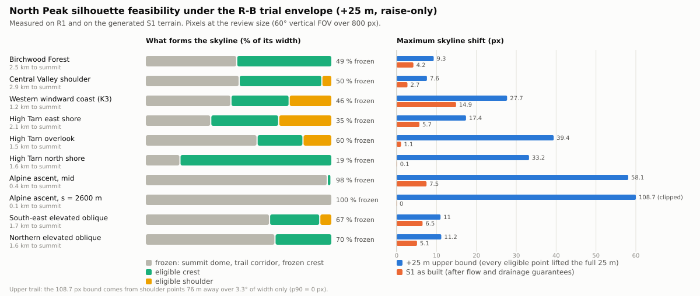
| Viewpoint | Distance | Skyline frozen | Upper bound, px | S1, px | S1 width > 3 px | Viewshed hidden / new, ha |
|---|---|---|---|---|---|---|
| Birchwood Forest | 2.5 km | 49 % | 9.3 | 4.2 | 2.2° | 2.6 / 0.2 |
| Central Valley shoulder | 2.9 km | 50 % | 7.6 | 2.7 | 0° | 0.4 / 0.5 |
| Western windward coast (K3) | 1.2 km | 46 % | 27.7 | 14.9 | 40° | 0.4 / 0.1 |
| High Tarn east shore | 2.1 km | 35 % | 17.4 | 5.7 | 4.4° | 4.5 / 0.8 |
| High Tarn overlook | 1.5 km | 60 % | 39.4 | 1.1 | 0° | 0.7 / 0.3 |
| High Tarn north shore | 1.6 km | 19 % | 33.2 | 0.1 | 0° | 0.0 / 0.1 |
| Alpine ascent, mid | 0.4 km | 98 % | 58.1 | 7.5 | 15.2° | 2.6 / 1.5 |
| Alpine ascent, s = 2600 m | 0.1 km | 100 % | 108.7 | 0 | 0° | 8.7 / 0.7 |
| South-east elevated oblique | 1.7 km | 67 % | 11 | 6.5 | 6° | – |
| Northern elevated oblique | 1.6 km | 70 % | 11.2 | 5.1 | 3.4° | – |
2 · Compare real renders
Same camera, sun and material for every variant. Walk cameras stand 1.75 m above the loaded terrain. Clay only: no standard-material gallery, per the brief, because the first images showed no meaningful improvement.
Matched sheets (M0 | A1b-α | S1), with a crop of the massif
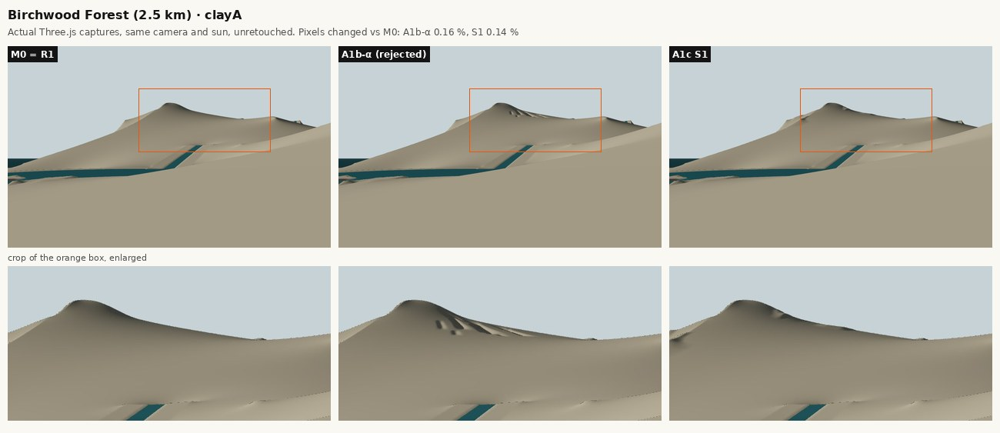
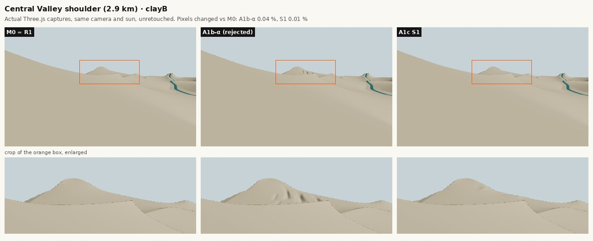
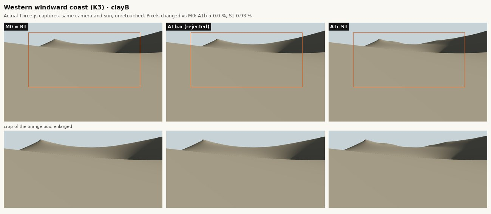
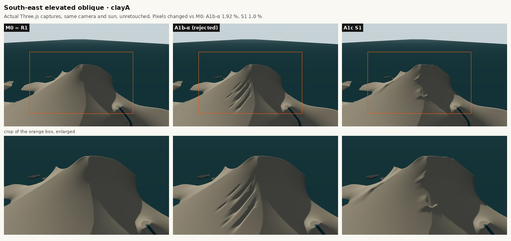
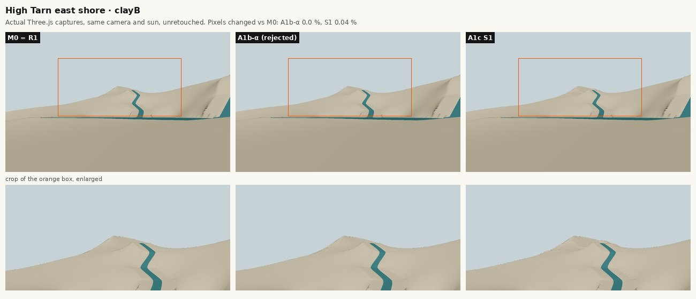
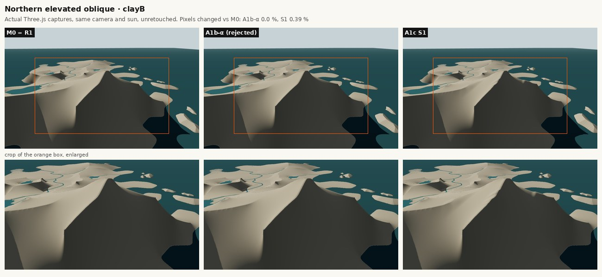
3 · Artistic evaluation
Judged on the real captures under both sun presets. Pixel counts show visibility only, not quality.
| 1. Visibly meaningful from the identity views? | No. Birchwood 4.2 px maximum skyline shift (2.2° of width over 3 px), Central Valley shoulder 2.7 px (none over 3 px), High Tarn overlook 1.1 px, north shore 0.1 px. Even the +25 m upper bound, with every eligible point lifted the full amount and no hydrology guarantees, gives only 9.3 px and 7.6 px from those two far views: at 2.5–2.9 km, 25 m subtends 0.5–0.6°. |
|---|---|
| 2. Are the three arms legibly asymmetric? | No. The A2 shoulder (n-main crest raised at most +13.7 m) and the A1 steps (+17 m on n-crown) start 200–230 m from the summit and are invisible in the far views. The A3 spur shoulder is legible only from the western coast. Without changing the summit block, the arms keep the same symmetric fall from the dome. |
| 3. Does it read as one mountain system? | Not more than M0. The raises are six separate patches. They cannot connect to the summit because the summit is frozen within 150 m (zero change, 80 m fade), and the A3 west arm is frozen along the peak-ascent corridor (zero within ~139 m). So any massing reads as bumps on arms, not as arms growing out of a sculpted summit. |
| 4. Are the transitions natural? | Measured as smooth (fade gradient ≤ core, curvature ≤ core), but not visually clean. Keeping every R1 drainage destination forces local attenuation where a raised crest would shift a divide, and that leaves dents in the raise of up to 11.4 m below the designed surface (693 cells more than 2 m below it). One shows as a hook-shaped notch on the south-east oblique. |
| 5. Does more than one camera improve? | No. Only the western windward coast shows a change that could be called massing (14.9 px, 40° of width over 3 px). From the south-east oblique and the High Tarn east shore, the change is visible but reads as lumps. Elsewhere it is not visible. |
| 6. Is hydrology still valid? | Yes, by construction: a flow-preserving cap and destination-preserving attenuation keep every cell above its R1 receiver and every catchment on its R1 destination (0 new sinks, 0 rerouted cells). That validity is exactly what limits the form: on these arms, crest lines are 1–3 cells off the R1 divides, so any visible crest raise moves a divide. |
| View · pixels changed vs M0 (A1b-α / S1), % | Clay A | Clay B |
|---|---|---|
| North Peak from Birchwood | 0.16 / 0.14 | 0.07 / 0.07 |
| North Peak from the Central Valley shoulder | 0.14 / 0.05 | 0.04 / 0.01 |
| North Peak from the western windward coast (K3) | 0.0 / 0.49 | 0.0 / 0.93 |
| North Peak across High Tarn from its east shore | 0.01 / 0.07 | 0.0 / 0.04 |
| High Tarn overlook | 0.0 / 0.0 | 0.0 / 0.0 |
| A2 south-west face from the upper trail (s = 2600 m) | 1.56 / 0.4 | 0.83 / 0.12 |
| W arete · looking up to the summit | 0.0 / 0.0 | 0.0 / 0.0 |
| Elevated oblique · from the south-east | 1.92 / 1.0 | 0.31 / 0.34 |
| Elevated oblique · from the north over the sea | 0.0 / 0.28 | 0.0 / 0.39 |
S2: Not generated. The brief says not to proceed automatically if S1 fails, and S1 fails artistically for structural reasons that S2 shares: the frozen summit dome and corridor, the crest lower bound (cut-and-fill needs lowering), and the 25 m envelope at 2.5–3 km distance.
4 · S1 terrain
Six declared raise segments on four ridges. The profile gives the designed crest raise along the ridge from its origin; the flow cap and drainage-destination guarantee then reduce it where needed.
| Segment | Ridge | Designed peak | Span along ridge | Flank widths L / R | Intended character |
|---|---|---|---|---|---|
| A2-shoulder | n-main | +22 m | 200–420 m | 110 / 170 m | broad shoulder below the summit, then a steep rock step |
| A2-lower-step | n-main | +13 m | 480–680 m | 120 / 150 m | second, lower step on the continuing arête |
| EA-rim | n-east-arc | +20 m | 40–470 m | 140 / 120 m | one broad sub-summit on the tarn rim near the A2 junction (the second hump was dropped: it sits on the sea / High Tarn spillway saddle and would reroute about 9 ha into High Tarn) |
| A1-steps | n-crown | +17 m | 230–460 m | 100 / 130 m | stepped arête: two rock steps of different height |
| A3-spur-shoulder | n-west-spur | +22 m | 220–680 m | 150 / 120 m | one massive shoulder, gentle on its long south-west side |
| A3-west-hump | n-main | +14 m | -640–-440 m | 130 / 130 m | low broad hump beyond the trail, keeps A3 the gentlest arm |
| Ridge | Crest cells raised | Crest length raised > 2 m | Max crest raise |
|---|---|---|---|
| n-main | 573 | 180 m | +13.7 m |
| n-crown | 284 | 204 m | +17.0 m |
| n-west-spur | 569 | 380 m | +17.6 m |
| n-east-arc | 539 | 296 m | +20.0 m |
In total 24,596 cells change (39.35 ha, of which 35.26 ha by more than 5 cm), all raised, maximum +20.0 m. The full cell list is public/geo-r02c-a1c/s1.declared.json.
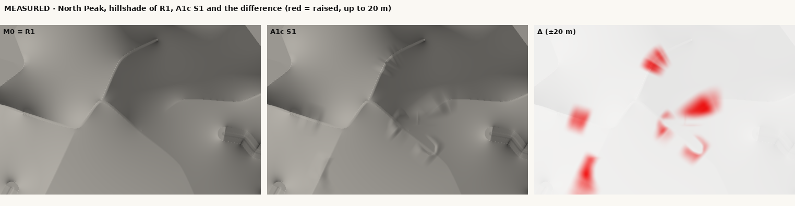
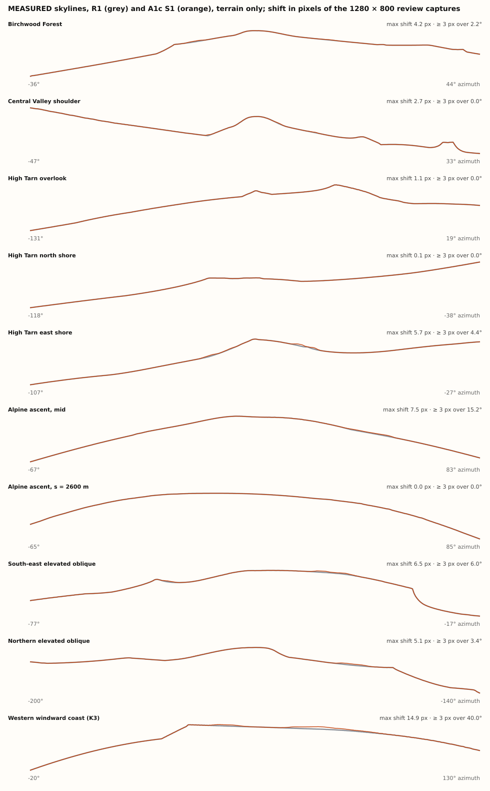
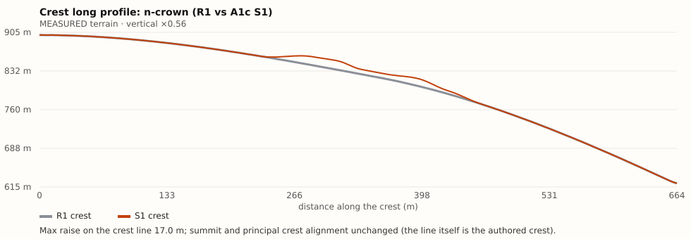
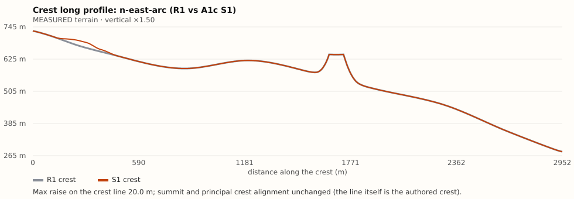
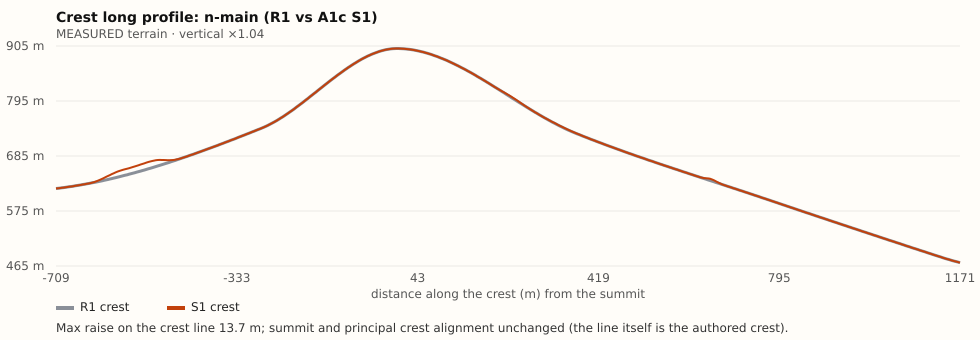
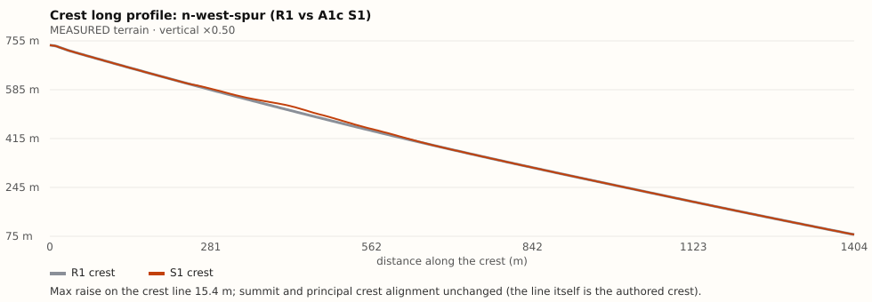
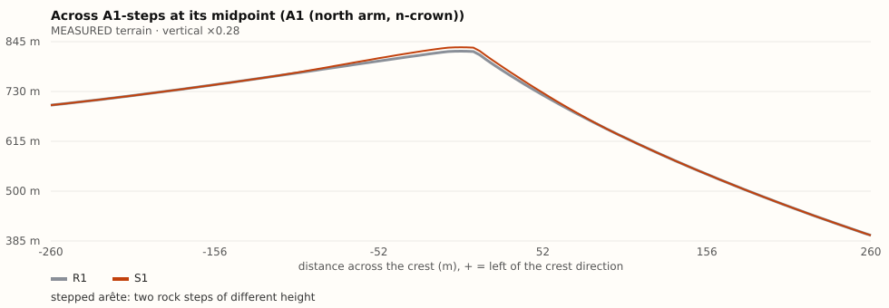
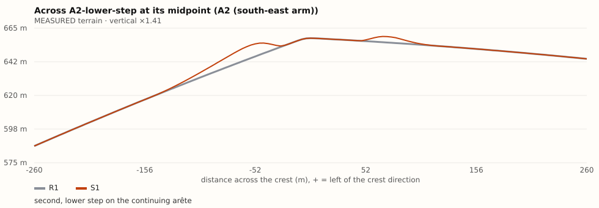
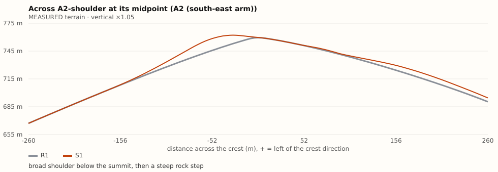
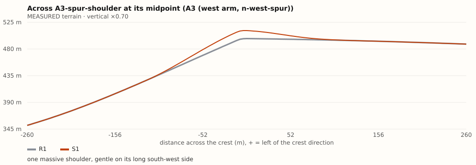
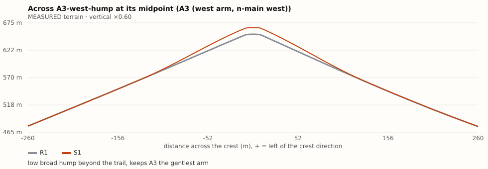
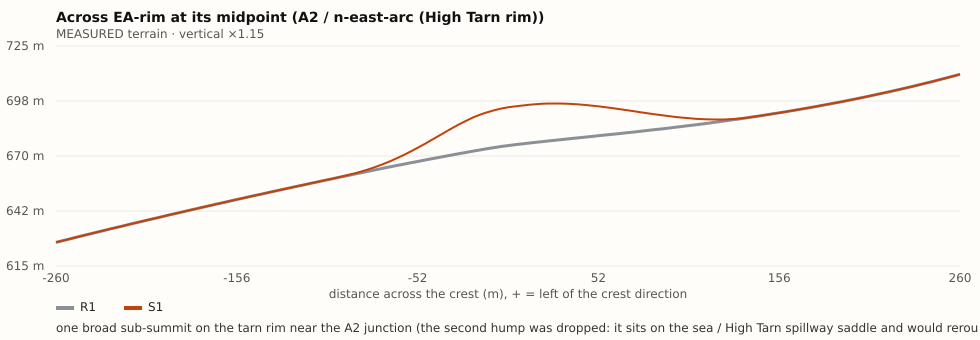
5 · Technical gates
The unmodified A1a suite reports pass = false because crest cells change; the A1c pass applies under the declared R-B trial and is otherwise stricter.
| Gate | Result |
|---|---|
| Empty overlay M0 = canonical R1 (byte for byte) | pass |
| Outside the window unchanged | pass |
| Every protected class except crest unchanged, cell for cell (sea, lakes, wet, valley floors, divides, corridors, zones, water surface) | pass |
| Every changed cell declared in the overlay manifest (1,965 crest + 22,631 shoulder) | pass |
| Crest raise-only, never below its lower bound (0 lowered, max +20.0 m) | pass |
| Summit position and height unchanged (899.95 m); nearest change 197 m away | pass |
| Nearest change 137.8 m from the peak-ascent / tarn-ascent centrelines (required ≥ 135 m) | pass |
| No new dry sinks (priority flood) | pass |
| No drainage-destination change (no catchment rerouted) | pass |
| Water, lakes and channel beds unchanged | pass |
| Land/sea and coast 0–150 m unchanged | pass |
| Route centrelines unchanged (Δ = 0 m on all six) and cross-slope unchanged at 8 m and 20 m | pass |
| Smooth transitions: fade gradient max 0.449 ≤ core 0.499; curvature 0.058 ≤ 0.079 | pass |
| Deterministic generation (2 runs, identical SHA-256) | pass |
| npm test: 50/50 pass (43 existing, unmodified, + 7 new A1c tests) | pass |
| npm run build (tsc --noEmit + vite build): pass | pass |
Full reports: validation/s1.json, validation/m0.json, feasibility/feasibility.json, data/evidence-s1.json, data/pixel_diff.json, run-log.json.
Limitations
- Clay renders only (two sun presets); no vegetation, snow or atmospheric perspective, which in the shipped look would reduce the visibility of 2–15 px changes further.
- Skyline and viewshed measures are terrain-only ray casts on the 4 m grid; the pixel figures assume the review frame (60° vertical FOV, 800 px).
- The two new A1c cameras (western coast K3, High Tarn east shore) were chosen to show the arms that the review cameras miss; the western coast frame is dominated by a near foreground slope, which is what a player there sees.
- S1 is one parameterisation. Different segment choices within the same rules were tested per segment for hydrology (EA hump 2 dropped, starts moved out of the summit fade). The feasibility upper bound shows no choice within the envelope could reach a strong far-view result.
Recommendation
Stop local calibration of North Peak under the current protections. A1a (ridges, invisible), A1b-α (face detail, surface marks) and A1c S1 (crest massing, insignificant) bracket the space: the protected summit dome, the trail corridor on the A3 arm and the crest lower bound together fix the silhouette.
The smallest design-authority change that can produce a different mountain is an R-C revision of the North Peak block in the design master: a re-authored summit block and arm profiles, with summit position and height kept, allowing the crest within ~150 m of the summit to change by up to about ±50–60 m and allowing lowering (saddles, notches) below the current crest bound on the A1 and A2 arms. It must be combined with R-A on the A3 arm only, re-aligning or narrowing the peak-ascent corridor locally so the trail ridge can take a profile, and accompanied by regenerating R1 drainage for the block instead of preserving every current divide.
Before that, an art review should decide what North Peak should look like from Birchwood and the Central Valley shoulder (a target silhouette drawing). The measurements show that the rest of the dossier follows from that one decision.